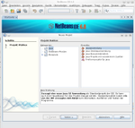
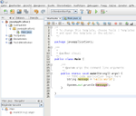

Netbeans
Dieser Artikel wurde für die folgenden Ubuntu-Versionen getestet:
Ubuntu 14.04 Trusty Tahr
Zum Verständnis dieses Artikels sind folgende Seiten hilfreich:
 NetBeans IDE ist eine sehr umfangreiche Entwicklungsumgebung. Entwickelt wurde sie von Studenten aus der Tschechischen Republik. Im Jahr 1999 wurde die, aus dem Projekt entstandene, Firma von Sun Microsystems, den Erfindern von Java, aufgekauft und das Programm später als OpenSource-Projekt zur Verfügung gestellt. NetBeans IDE wurde hauptsächlich für die Programmiersprache Java entwickelt, unterstützt aber neben C und C++ auch dynamische Programmiersprachen wie Python, Ruby oder PHP. Darüber hinaus wurden Packs entwickelt, welche NetBeans IDE eine große Anzahl weiterer Einsatzmöglichkeiten eröffnet.
NetBeans IDE ist eine sehr umfangreiche Entwicklungsumgebung. Entwickelt wurde sie von Studenten aus der Tschechischen Republik. Im Jahr 1999 wurde die, aus dem Projekt entstandene, Firma von Sun Microsystems, den Erfindern von Java, aufgekauft und das Programm später als OpenSource-Projekt zur Verfügung gestellt. NetBeans IDE wurde hauptsächlich für die Programmiersprache Java entwickelt, unterstützt aber neben C und C++ auch dynamische Programmiersprachen wie Python, Ruby oder PHP. Darüber hinaus wurden Packs entwickelt, welche NetBeans IDE eine große Anzahl weiterer Einsatzmöglichkeiten eröffnet.
|  |
| Projektauswahl |
|  |
| Projekt in Java |
Installation¶
Paketquellen¶
NetBeans lässt sich direkt aus den Paketquellen installieren [1]:
netbeans (universe)
 mit apturl
mit apturl
Paketliste zum Kopieren:
sudo apt-get install netbeans
sudo aptitude install netbeans
Fremdquellen¶
Bevor man NetBeans installiert, sollte man sichergehen, dass das Java SDK installiert ist. Außer man wählt eine Version ohne Support für die Entwicklung in Java, dann reicht auch OpenJDK.
Um NetBeans herunterzuladen, geht man auf die Projektseite  . Hier wählt man gegebenenfalls noch Linux als Plattform, sucht sich nun eines der Pakete aus und lädt es herunter. Nun muss man die Installationsdatei ausführbar machen [2] und starten.
. Hier wählt man gegebenenfalls noch Linux als Plattform, sucht sich nun eines der Pakete aus und lädt es herunter. Nun muss man die Installationsdatei ausführbar machen [2] und starten.
Hinweis!
Fremdsoftware kann das System gefährden.
Falls das Programm für alle PC-Benutzer installiert werden soll, startet man die Installationsdatei mit Root-Rechten [4] und gibt im Installer /opt/netbeans-<version> als Installationspfad an.
Will man NetBeans nur für sich installieren, reicht ein normaler Aufruf mit Angabe des Homeverzeichnisses inklusive netbeans-<version>"-Ordner als Installationspfad.
Nach der Installation befindet sich im Menü für die NetBeans-IDE ein Eintrag unter "Anwendungen -> Entwicklung".
Deinstallation¶
Zur Deinstallation von NetBeans liegt im Installationsverzeichnis die Datei uninstall.sh, die nur ausgeführt werden muss.
Look & Feel der IDE anpassen¶
Standardmäßig erscheint NetBeans nach der Installation im Metal-Look. Zur Aktivierung des gewohnten GTK-Looks muss die netbeans.conf angepasst werden. Diese befindet sich unter $INSTALL/etc/. Dabei steht $INSTALL für das Installationsverzeichnis von NetBeans. Ist NetBeans in einem Systemverzeichnis installiert, also nicht in Home, muss man den Editor [3] mit Root-Rechten [4] öffnen.
Nun wird zur "netbeans_default_options"-Zeile der folgende Eintrag hinzugefügt: "-J-DuseGtk=true" (ohne Anführungszeichen). Das Ganze sollte dann etwa so aussehen:
1 | netbeans_default_options="-J-Xms128m -J-Xmx256m -J-XX:PermSize=32m -J-XX:MaxPermSize=96m -J-ea -J-DuseGtk=true" |
Alternativ dazu kann man auch NetBeans mit der Option "--laf com.sun.java.swing.plaf.gtk.GTKLookAndFeel" starten.
Ab der Version 8.0 können die Anpassungen auch im Programm in den "Optionen -> Darstellung" und dann bei dem Reiter "Look and Feel" geändert werden.
Probleme mit der Schrift¶
Schriftprobleme kann das openjdk-6 verursachen. Abhilfe schafft, das Sun JDK als Standard zu nutzen. Welche Java Version die IDE nutzt, kann man im NetBeans-Menü unter "Help -> about" anschauen. Eine Manuelle Änderung der Standard JRE kann man in der netbeans.conf einstellen, zu finden siehe oben. Man ersetzt nun z.B. java-6-openjdk in java-6-sun die dann wie folgt aussieht:
1 | netbeans_jdkhome="/usr/lib/jvm/java-6-sun" |
Mehr über Java JDK/JRE im Java-Artikel.
Kantenglättung in der IDE¶
(Getestet mit NetBeans 6.5 und java-6-sun-1.6.0.16)
Falls die Schrift zu grob ist, der kann die Kantenglättung aktivieren. Die Einstellung nimmt man in der netbeans.conf vor, zu finden, siehe weiter oben. Hier fügt man "-J-Dswing.aatext=true" (ohne Anführungszeichen) in der Zeile am Ende von "netbeans_default_options" hinzu:
1 | netbeans_default_options="-J-Xms128m -J-Xmx256m -J-XX:PermSize=32m -J-XX:MaxPermSize=96m -J-ea -J-Dswing.aatext=true" |
Alternativ kann man NetBeans den Parameter beim Start übergeben:
netbeans -J-Dswing.aatext=true
Auch Folgendes kann funktionieren:
netbeans -J-Dawt.useSystemAAFontSettings=on
Links¶
NetBeans
- offizielle ProjektseiteTutorials
- Umfangreiches Archiv mit Anleitungen zum Arbeiten mit NetBeansNetBeans unter Ubuntu installieren
- Beschreibung, wie NetBeans und Sun JDK 6.0 installiert werden
- Erstellt mit Inyoka
-
 2004 – 2017 ubuntuusers.de • Einige Rechte vorbehalten
2004 – 2017 ubuntuusers.de • Einige Rechte vorbehalten
Lizenz • Kontakt • Datenschutz • Impressum • Serverstatus -
Serverhousing gespendet von